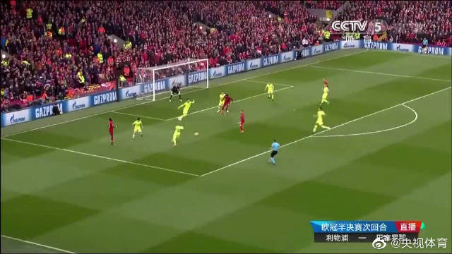

回复@小新o_o晃晃悠悠:很难讲具体点位，随着时间这个点位会上移。所谓钻石坑，就是A股大多数股票已经跌到很值得买的区域。从历史以及全球的双重维度看，这个区域遍地钻石。//@小新o_o晃晃悠悠:请问下为啥说2800是钻石坑@ETF拯救世界:还是那句话，不要急于加仓，你的仓位够，给时间和空间。有钱是大爷。
我有个问题，请学习好的同学帮着说说。为什么利物浦这些年总能培养出牛人。跟皇马巴萨曼城之类买巨星不同，除了青训，他们买的球员来的时候都不那么牛，结果培养几年就出好多大牛。到底为什么。这俱乐部是球探NB还是经理NB啊到底。
特别励志。不放弃就有可能出现奇迹。@央视新闻:【利物浦惊天逆转4-3淘汰巴萨 连续两年晋级欧冠决赛】欧冠半决赛次回合，利物浦在三名主力缺阵的情况下，在主场创造奇迹，4-0完胜巴萨，总比分4-3实现惊天逆转，连续两年晋级决赛！第7分钟和第79分钟，奥里吉梅开二度。第54分钟和第56分钟，下半场替补登场的维纳尔杜姆连入两球！转发祝贺！央视体育的微博视频 @央视体育 969万次播放 03:34